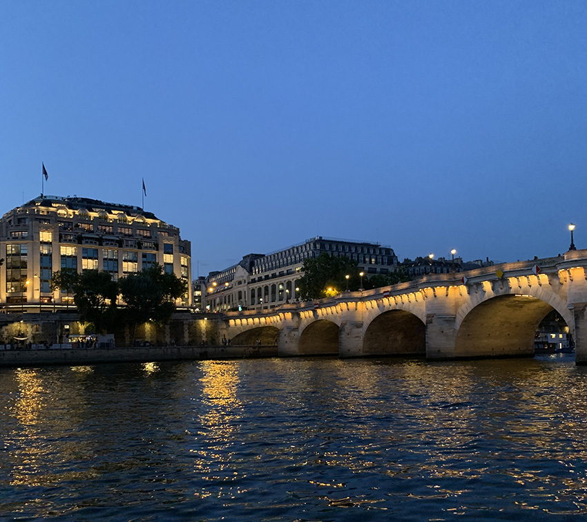

 Bienvenue à l HÔTEL LE DIVIN,HÔTEL LE DIVIN wurde von Hilda Schwarz, einer damals sehr edlen Dame im Jahr 1920 eröffnet. So wie auch damals steht das HÔTEL LE DIVIN' für Eleganz und Klassik. Sie erwartet wunderbar ausgestattete Zimmer, Restaurants und Spa-Bereiche. Das Hotel wird von unserer BAR LE DIVIN gekrönt, in der Sie die langen Tage in Paris mit einem wunderschönen Blick auf die Seine ausklingen lassen können. Aufgrund der fantastischen Lage, dem zuvorkommenden Personal und den anmutigen Zimmern durften wir schon viele wohlbekannte Gäste begrüßen. So erhoffen wir, dass Sie wohl unser nächster Ehrengast sein werden, den wir verzaubern dürfen.
>